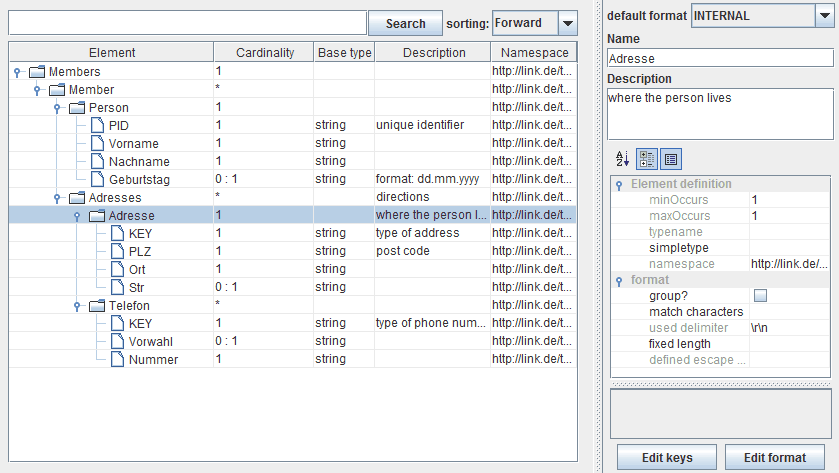

Configuration

Topic content
To configure a message type double click on the scenario element and the message type editor is opened. The following picture shows a message type describing a message containing address information of persons. The message also contains information about how the message is to be serialized.

To change the structure of a message type select an element of the type tree and click the right mouse button. You may
•Append child Add a new child element as last child
•insert before Add a new child element before the currently selected
•insert after Add a new child element after the currently selected
•delete the selected node The selected note will be deleted
•Add XML attribute A attribute node represents an XML attribute. It is represented with an @ before its name
•change the name of an element edit the name in the text field
•change the type of a simple element Available types are a subset of the types given in XML schema: string, int long, integer, decimal, boolean, double, float, date, dateTime, time, duration and base64 (see XML Schema Part 2: Datatypes for details)
•change the cardinality of an element defines how often the element can appear at that place. An XML attribute cannot appear more than one time. You may change its status by setting the check box optional in the properties area.
•change the documentation of an element Simply edit the description in the text field
A message type may also have a namespace. Because internally message types are stored as an XML schema, the namespace is the target namespace of that schema. (see XML Schema Part1: Structures). To change it, select the root element of the message type, then you can edit the field namespace in the properties area on the right of the editor. After changing it, in the column named namespace in the table, all the rows will change to the new namespace.
If a message type was expanded from an XML schema (see Expand from XML Schema) then the elements of the tree may have different namespaces if they originally were defined in different schemas.
Changing properties of element nodes within the message type
The message type editor shows the hierarchical structure of the message type. Whenever you click on an element on the right side of the editor panel the properties of this element are shown.
The following picture again shows the small message type, together with the properties area on the right side of the message editor.
Editing the properties of an element in the message type tree
The information displayed here sometimes goes beyond the mere structure and type information. The message type may also carry information about the preferred representation of the message.
First of all there is a field named . This is only a hint which is used in certain contexts. E.g. the value CSV means, that the type is used to describe a CSV file. For example if the user in the File Listener selects a Message type with default format CSV, then the CSV reader is automatically selected.
For every element of a message type a description may be entered in the field .
The properties area of the message type editor
Here some additional properties of the elements of a message type are displayed and may be changed from the user.
•message types imported from a database (see Import from Database) contain the original Table names, column names and column types of the original database.
In most cases it is not necessary to change this information. But sometimes it might be necessary or at least helpful.
For example if the column type in the database was changed from VARCHAR to INTEGER the user may update the message type by reloading it from the database or he may simply modify the element resembling the database column in the message type. This may be necessary in some channels, e.g. the uses this type information to create appropriate SQL statements.
•message types with (e.g. Import from OTD) contain information about the serialized format of the message. E.g. it may contain delimiters or, in case of fixed format messages the field lengths.
It may be necessary to change this information if e.g. the length of a field in the output format was changed.
•message types with default format HCM contain information about SAP HCM messages (Hospital communication module).
HCM has to be written with fixed field length, so the message types basically contain length information for its elements. This information then is used from the HCM reader and the HCM writer.
•message types with default format XDT contain information about XDT messages. These data formats are used in Germany in some areas of the health care business. The message types contain information which are used from the XDT deserializer and the XDT serializer to handle the messages.